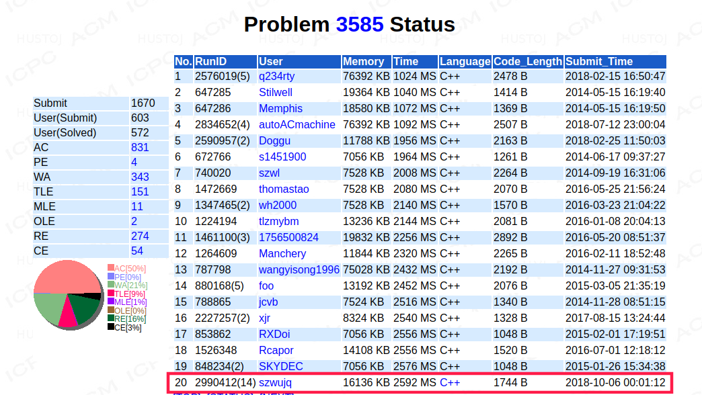

树剖类
[NOI2015]软件包管理器
题解
对于树上每个点，0表示未安装，1表示已安装。 安装一个软件$x$，把$path_{0,x}$全部赋1即可，卸载同样操作。 每次取已安装软件总数绝对值作为答案即可。
细节
注意大众写法应该将编号整体+1，避免对编号为0的点进行操作。
期望与概率DP类
WJMZBMR打osu! / Easy
题解
我又是看了题解才做出来的，菜爆了！
首先设第$i$个位置时combo长度为$a_i$，得分为$f_i=a^2$，此处先不考虑不确定性和期望，则假设连续正确输入第$i+1$个位置的得分为$f_{i+1}=(a_i+1)^2=a_i^2+2\cdot a_i+1$并且长度为$a_{i+1}=a_i+1$。
因此我们可以将整体得分表示为$$\sum_{i=1}^{i<=n}{(a_i\cdot 2+1)}$$
由此我们再来考虑概率的影响。可以发现根据上式，得分的期望与$a_i$的期望呈线性相关，由此可以直接处理combo长度的期望值$a_i$并在计算时对$f_i$进行转移。
这里对$f_i,a_i$的转移进行分类讨论
- s[i]='o' $f_i=f_{i-1}+a_{i-1}\cdot2+1,a_i=a_{i-1}+1$
- s[i]='x‘ $f_i=f_{i-1},a_i=0$
- s[i]='?' $f_i=\frac{1}{2}\cdot [f_{i-1}+(f_{i-1}+a_{i-1}\cdot2+1)],a_i=\frac{1}{2}\cdot[a_{i-1}+(a_{i-1}+1)]$
然后据此打出来就可以了。因为题目没有给出n的范围，且此转移只和上一个状态相关，因此可以采用边读边算的方法或者乱混n大小的方法。
[国家集训队]单选错位
题解
看题解系列，没救了！
首先题面说得有点意思，给了一段数据生成的程序，很有意思并没什么用。
然后我们来分析一下问题，首先是手动模拟这个概率计算。沿用题面里的$a_i$表示第i道题的选项个数，若第i-1道题对了则对于第i题的每个选项$j,~j\le a_{i-1}$，有$\frac{1}{a_{i-1}}$的可能性错位后选择的是这个选项（上一题的答案是j），而对于每个$k,~k\le a_i$有$\frac{1}{a_i}$的可能是正确答案，会产生$\frac{1}{a_{i-1}}\cdot \frac{1}{a_i}\cdot1$的期望值。由于要求选项一一对应，只有$j=k$时才对分数有贡献。
所以对于每题，期望分值为$\sum_{i=1}^{i\le\min (a_i,a_{i-1})}\frac{1}{a_{i-1}\cdot a_i}=\frac{\min(a_{i-1},a_i)}{a_{i-1}\cdot a_i}$
然后读入完之后直接$O(n)$顺着扫一遍就得到答案了。
数据结构类
mex
题解
看题解x2，自己准备滚了！
偶然看到此题，以前用莫队水过，但是感觉$O(n\sqrt n)$的算法很不优秀，遂搜索，知有主席树做法，匆忙瞟过，yy了一种不可做方法纯暴力，然后去膜正解了。
参考
先离线询问（按右端点升序排列），离散化a数列，再建值域线段树，维护每个值出现的最右端位置$mx_i$的最小值，查询时找到最小的pos使得$mx_{pos}\le l$即得到所求最小自然数。
该方法非常神仙，在此$Orz_{Orz_{Orz}}$一波WerKeyTom_FTD神仙。
细节处，离散化时先排序，然后扫一遍，若$a_i+1=a_{i+1}$说明比$a_i$大1的自然数（可能取到为答案）在序列里，否则同时向去重后的数组加入$a_i+1$。
离散化线段树代码较主席树方法短，常数小，进了第一面（lydsy）